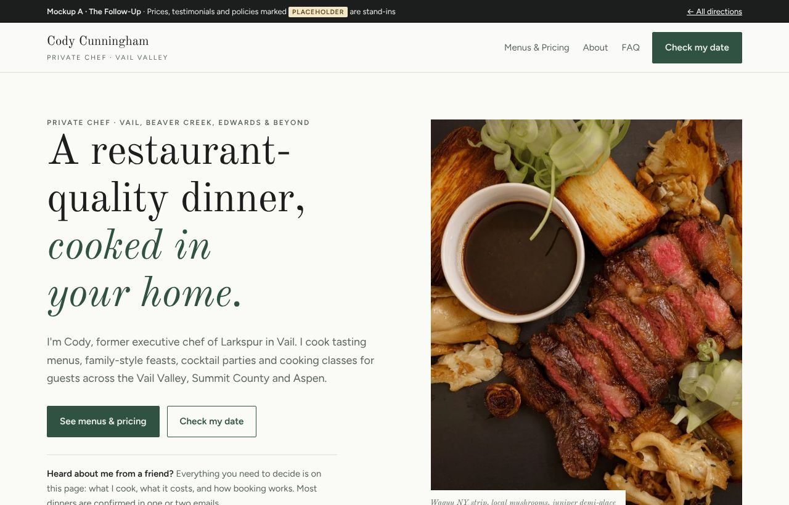
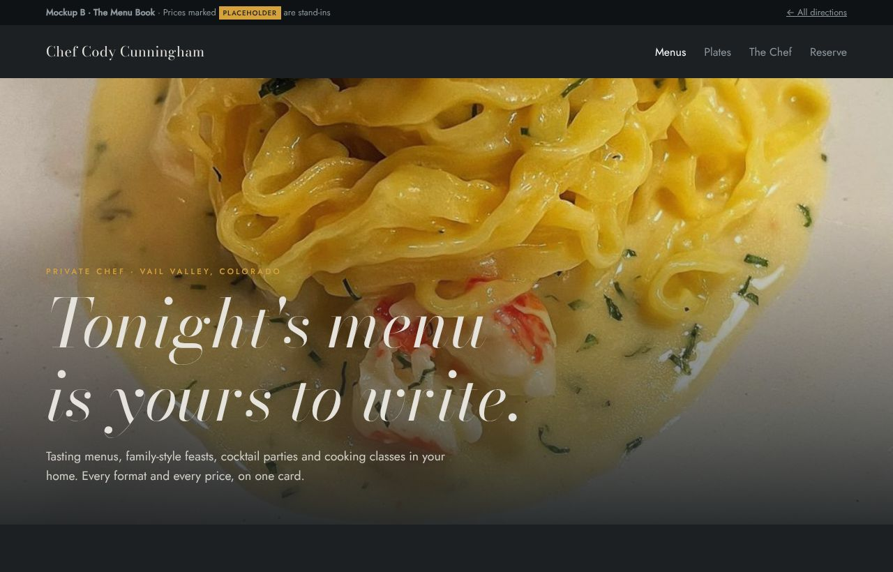
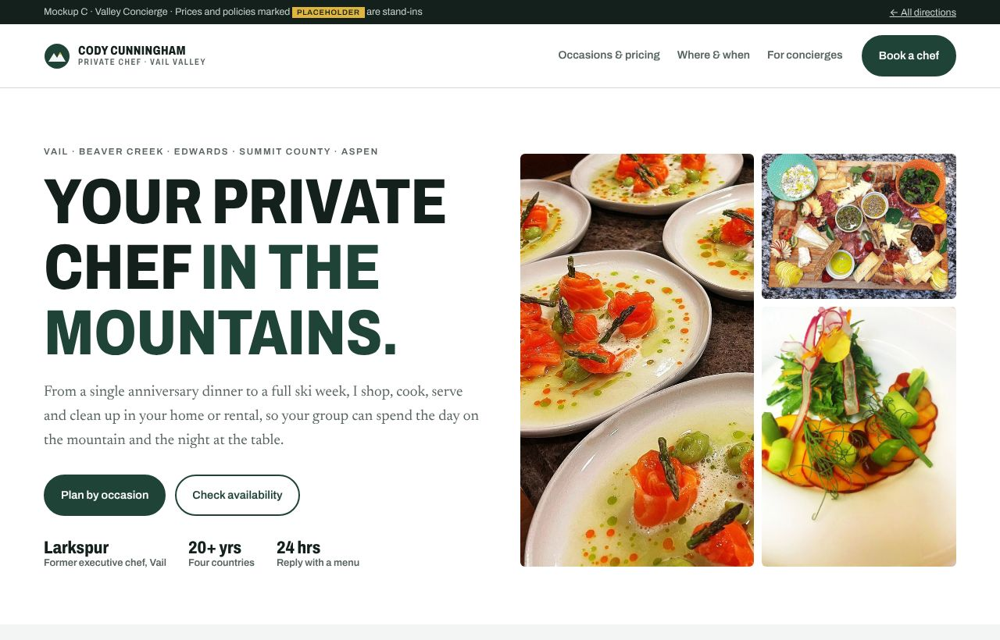

chefcodycunningham.com · Redesign plan · November 2026
A website that books the dinners word of mouth starts
Your bookings come from people talking about you in the Vail Valley. This site's job is to turn "you should call Cody" into a confirmed date, and to answer the price question before anyone asks it.
Where bookings leak today
Most clients follow a path like this. Today the site does little at the "Looks you up" step, and prices only show up in the menu PDF you email them.
1 · HearsA friend, concierge or host mentions you
2 · Looks you upGoogles your name or taps your Instagram
3 · InquiresCalls, texts or fills a 5-field form
4 · Gets pricesYou email menus and prices. Many go quiet here.
5 · BooksDeposit, menu, dinner
Silence after step 4 usually means price or fit: they wanted something cheaper, or something different. You can't fix that by email. You fix it by moving the price earlier, so step 3 only happens when the budget already fits. You'll get fewer inquiries, but each will be worth more and cost you less time.
What the site is for
1
Close the referral
Someone who has just heard your name should know within 30 seconds that you're legit, what you cook, roughly what it costs, and how to book.
2
Filter before the inbox
Public starting prices, minimums and a budget question on the form screen out bad fits before you write a menu.
3
Be the link you send
Every reply, text and business card points to one page, /menus, which is always current. No more PDFs.
4
Know who refers you
A "Who referred you?" field shows which friends, concierges and property managers send work, so you can thank them and win more.
Secondary goal: show up when visitors search "private chef Vail" or "Beaver Creek private chef." The site helps here, but a Google Business Profile with reviews will do more. Set one up alongside the site.
Four ways to handle pricing
This is the biggest decision, because it decides what kind of inquiries you get.
Open book
Full price list
Every format with a fixed per-guest price, add-ons and fees, all public.
Good- Strongest filter, fewest ghosts
- Inquiries arrive pre-sold
Watch- Hard to price special requests
- Competitors see your numbers
"Starting at"
Recommended
Each format shows a "from" price per guest and a minimum booking, and lists what's included. The exact quote comes with the custom menu.
Good- Filters out the bottom of the market
- Leaves room for premium menus
- Feels like a restaurant menu, not a rate card
Watch- Set floors honestly, or you'll still get sticker shock
Gated menu
Email for prices
Menus are public. Prices arrive by email after someone enters their details.
Good- Captures contacts you can follow up with
Watch- Adds friction for warm referrals
- Doesn't fix ghosting, just moves it
Budget-first
No public prices
No prices on the site, but the form asks for a budget per guest in bands.
Good- People tell you their budget
Watch- People guess low when they don't know your range
Recommendation: show "Starting at" prices, plus a budget question on the form. All three mockups use this. Their prices are placeholders until you send your real numbers.
Three design directions
Each direction is a different strategy as well as a different look. Open them on your phone too, since most referrals will see the site there first.

A
The Follow-Up
One calm page that answers a referred guest's questions in order: who you are, how it works, prices, menus, story, FAQ, inquiry. Keeps your current typeface for continuity.
Best if almost all your business is word of mouth and you want the simplest site to run.
Open mockup A →

B
The Menu Book
Your menus are the homepage, set like a printed menu card on slate, with tabs for each format and its price. Moody, photo-led, closest to a fine-dining restaurant.
Best if you want the menus and prices to do the selling, and want one link to send after every inquiry.
Open mockup B →

C
Valley Concierge
Built for visitors and the people who host them. Plan by occasion (ski week, dinner party, après), with a service-area map, a when-to-book calendar and a page for concierges.
Best if you want more vacation-rental and multi-night work, and more referrals from property managers.
Open mockup C →
| A · Follow-Up | B · Menu Book | C · Valley Concierge |
|---|
| Main visitor | Friend of a past client | Anyone weighing price and food | Visitor, host or concierge |
| Pages | 1 long page | Menus home + 3 short pages | 4–5 pages incl. partners |
| How it sells | Trust, then clarity | The food and the menu | Convenience and logistics |
| Feel | Light, editorial, warm | Dark, fine dining | Bright, modern, alpine |
| Upkeep | Lowest | Update menus seasonally | Highest (seasons, partners) |
| Risk | Plain if photos are weak | Can feel formal for family-style | Less personal, more "service" |
My recommendation
Combine them. Use A's single-page structure for the homepage, B's menu card as a dedicated /menus page (the link you send every inquiry), and C's occasion picker as an "In-residence & ski weeks" section if multi-night work is something you want more of. Mix and match freely. The styles can be swapped too, for example A's structure in B's dark look.
Proposed site map
Shorter than today: four core pages instead of five, and no empty cart page.
Home Core
Who you are, how it works, starting prices, a menu teaser, short bio, testimonials, inquiry form.
Menus & Pricing Core · /menus
Every format with a sample menu, starting price, minimum and what's included. The page you link from every reply.
About Core
Your story, career timeline and portrait. Today's bio, trimmed by about half.
Inquire Core
The form with date, guests, town, format, budget band and referrer. Also your phone and Instagram.
FAQ New
Groceries, deposits, cancellations, allergies, wine, kitchens, travel. Answers the questions you get asked every time.
Ski weeks & in-residence New · optional
Multi-night stays: day rates, sample week, breakfast and lunch options.
For concierges New · optional
A partner sheet, quick-booking line and a link to share with guests.
Gallery New · optional
Your favorite photos in a grid. Could also live on Home and lean on Instagram.
Gift a dinner New · idea
Gift certificates for anniversaries and holidays. Sells well before Christmas.
Consulting Existing · keep small
Restaurant consulting stays as one line with a "contact me" link unless it's a real focus.
What I need from you
To make it real
- Your price sheet (the one you email), or starting prices per format
- Minimums, deposit, cancellation, gratuity and travel policies
- Whether groceries are included or billed at cost
- The current menus you send out
- Your favorite photos (the "Photos a la food" folder)
- A newer portrait, ideally cooking or at a table
To make it stronger
- 3–5 short quotes from past clients, with permission to use first name and town
- One quote from a concierge or property manager
- Your sommelier partner's name, if you'd like to credit them
- Any press, awards or notable events
- Which work you want more of: dinners, ski weeks, events or classes
How it gets built
- Hosting: GitHub Pages, free. Your domain chefcodycunningham.com points to it, and you can cancel Squarespace once it's live.
- Inquiry form: GitHub Pages can't receive form submissions, so the form will send through a free service such as Formspree, straight to your email.
- Photos: cropped, color-corrected and compressed so pages load fast on mountain cell service.
- Search: page titles, descriptions and local business markup for Vail, Beaver Creek, Edwards and Avon. Pair this with a Google Business Profile.
- Your reply email: a saved template that links to /menus and asks for a deposit to hold the date. That's where the ghosting gets fixed.
Next step: pick a direction (or a mix), send me your prices and your favorite photos, and I'll build the full site.